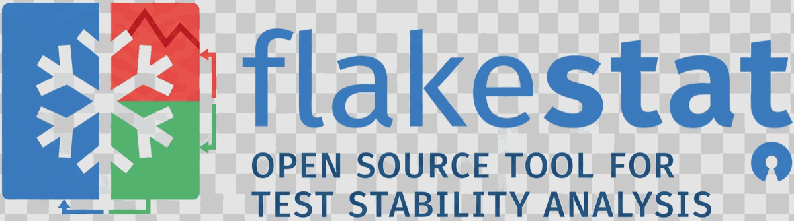

A flaky test passes and fails on the same code. flakestat reads the JUnit XML your test runner already writes and tells you which tests are actually flaky — ranked, with a confidence level, and with the evidence behind every verdict.
VERDICT SCORE CONF RUNS PASS/FAIL TEST
flaky 0.62 high 20 14/6 test_demo::test_flaky_race
consistently-failing 0.00 high 20 0/20 test_demo::test_broken
1 flaky, 0 suspect, 1 consistently failing, 1 stable, 1 unscored (of 4 tests)Local first
One static binary. No account, no server, no test data leaving your machine.
Any language
If your runner writes JUnit XML — and they all do — flakestat reads it. No plugin.
Free at any volume
Recording CI runs costs no extra compute. There is no per-seat or per-run pricing.
Zero dependencies
The Go module has no require block. Nothing to audit but the tool itself.
Install
Same binary whichever route you pick.
# Homebrew
brew install rowhitswami/tap/flakestat
# npm — JS/TS projects
npm install --save-dev flakestat # or: npx flakestat
# pip — Python projects
pip install flakestat
# Go
go install github.com/rowhitswami/flakestat/cmd/flakestat@latest
# Script — CI, or no package manager
curl -sSfL https://raw.githubusercontent.com/rowhitswami/flakestat/main/scripts/install.sh \
| sh -s -- -b /usr/local/bin
# Docker
docker run --rm -v "$PWD:/workspace" ghcr.io/rowhitswami/flakestat reportOr download a binary from Releases — macOS, Linux and Windows, on x86_64 and arm64.
Quickstart
There are two ways to use flakestat, and they answer different questions.
1. Hunt — is this suite flaky right now?
Runs your test command N times on unchanged code and reports what disagreed. Good for a suite you already suspect, or before opening a pull request.
flakestat hunt --runs 20 --junit 'reports/junit-{run}.xml' \
-- pytest --junitxml='{junit}'
{run} is replaced with the run number so each run writes its own
report, and {junit} is replaced with that path inside your command.
Anything after -- is your command, untouched.
Run flakestat init first and it detects your setup, so the whole thing becomes:
flakestat init # writes .flakestat.json
flakestat hunt2. Ingest — which tests are flaky over time?
Records the CI runs you already pay for. This is the one that catches environment-dependent flakes a local burst never will, and it costs no extra compute.
# in CI, after your tests run
flakestat ingest 'reports/**/*.xml'
# any time
flakestat report --top 20Reading a report
VERDICT SCORE CONF RUNS PASS/FAIL TEST
flaky 0.62 high 20 14/6 test_demo::test_flaky_race
suspect 0.08 low 6 5/1 test_api::test_timeout
consistently-failing 0.00 high 20 0/20 test_demo::test_brokenVerdicts
Score and confidence
Score is how often the test disagrees with itself: 0.62 means
roughly six out of ten consecutive runs changed their answer. It is not a
failure rate. A test failing 100% of the time scores 0.00.
Confidence is low, medium or
high depending on how much evidence sits behind the score. A score
of 0.62 from three runs and the same score from three hundred are very
different claims, and a small sample can never reach high no
matter how flaky the test looks. Classification uses a lower bound on the
score, not the score itself, so a verdict needs evidence rather than a lucky
flip.
Hunting locally
flakestat hunt --runs 30 --junit 'reports/junit-{run}.xml' \
-- go test ./... -count=1If it finds nothing
That is a real result, not a failure. It means nothing disagreed in that many
runs. A test that fails 2% of the time will usually survive 20 runs untouched —
raise --runs, or record CI history instead, where the sample grows
for free.
Chasing one test
flakestat hunt --runs 50 --junit 'reports/junit-{run}.xml' \
-- pytest tests/test_checkout.py::test_race --junitxml='{junit}'--parallel
--parallel N runs N copies of your command in the same working
directory. A suite that writes fixed paths, binds a fixed port or shares a
database collides with itself and looks flaky when it isn't. This is real:
running against spf13/cobra with --parallel 4 reported
a test as flaky at 0.60 because concurrent copies deleted each other's build.
Sequentially, cobra is clean.
So flakestat verifies its own findings. Candidates found under
--parallel are re-run sequentially and demoted to
suspect if they don't reproduce. Sequential is always trustworthy;
use --parallel to hunt faster and let verification sort out the
difference, or --verify 0 to opt out.
Tracking flakiness over time
A burst proves flakiness exists. History measures it, and catches flakes that only appear on one platform, one runtime, or under CI load.
flakestat ingest 'reports/**/*.xml' \
--commit "$GIT_SHA" --branch "$BRANCH"Commit and branch default to the current git checkout. Recording the commit is what lets flakestat tell genuine flakiness — same code, different result — from a regression someone later fixed.
History lives in .flakestat/runs.ndjson, one JSON object per line.
Because it is append-only NDJSON, results from parallel CI shards concatenate
with cat and no merge step.
Re-ingesting is safe
Every observation carries the identity of the execution it describes, so an artifact uploaded twice, a re-run aggregation step, or a shard collected by two jobs is counted once — while a genuine retry, which really did run the tests again, still counts.
This matters more than it sounds. A duplicate carries its original's timestamp, sorts next to it, and always agrees with itself, so uncounted duplicates make a flaky test look stable. Measured on a test failing 4 of 12 runs, ingesting the same reports twice moved the score from 0.64 to 0.30.
Copies are ignored on read, so nothing is required of you.
flakestat compact removes them from the file as well, which is
worth doing when the file is the record you keep.
Where to keep the history
Three arrangements, in increasing order of usefulness.
Commit it
Simplest. .flakestat/runs.ndjson goes in the repo and everyone
shares one history. Downside: every CI run wants to write to it, which means
telemetry commits in your development history.
A CI artifact
Zero setup, but nothing accumulates — each run sees only itself, so you never build the long history that makes the tool accurate.
A dedicated branch (recommended)
What flakestat uses for itself. Keeps telemetry out of your development history, avoids a bot commit retriggering your workflow, and gives one place to serialize concurrent writers.
matrix jobs → per-job NDJSON artifacts → aggregate job
→ fetch history branch → merge + compact → analyze
→ commit back to the history branchconcurrency:
group: flakestat-history-writer
cancel-in-progress: falseflakestat's own CI workflow implements this end to end, including re-merging a push that lost a race.
Recording where tests ran
Pass --dimension key=value, repeatable, to record the context a run
happened in. flakestat then reports where failures concentrate.
flakestat ingest 'reports/**/*.xml' \
--dimension os=windows \
--dimension runtime.version=3.13 \
--dimension database=postgres-17Where the failures concentrate
os=windows
failures here: 12 / 12 (100.0%)
elsewhere: 0 / 24 (0.0%)
difference: +100.0 pp
Inside a recognized CI provider, os, arch and the
run/job identity are detected automatically. Two rules keep that honest:
-
Only a whitelist of known CI variables is read, and only JUnit
<property>names flakestat recognizes. The process environment is never scraped, so secrets and build ids cannot end up in your history. -
Host details are recorded only when flakestat ran the tests. If one job
downloads other jobs' artifacts and ingests them centrally, pass
--no-host— otherwise the aggregator's platform gets stamped onto results from everywhere else. Merging each job's NDJSON withcatavoids the problem entirely.
Canonical keys
| Key | Meaning |
|---|---|
os, arch | Platform the tests ran on |
runtime.name, runtime.version | Language runtime under test |
ci.provider | github, gitlab, circleci, buildkite, jenkins, azure |
ci.run_id, ci.job_id | Provenance. Recorded, never analysed — every failure happened during some run |
ci.attempt | Separates a retry from a duplicate. Never analysed: retries happen because of failures |
ci.shard, ci.worker | Which shard or worker executed the run |
Anything else you pass is a user dimension and is analysed normally.
Gating CI without a permanently red build
Most repos already have flaky tests when they adopt a tool like this. Failing on
all of them means a red build on day one and a deleted gate by day
three. So check is a ratchet: accept today's flakiness, then fail
only on what is new or measurably worse.
flakestat check --update-baseline # once; commit .flakestat/baseline.json
flakestat check --fail-on-new # in CI from then on| Exit code | Meaning |
|---|---|
0 | Nothing new |
1 | A test became flaky that wasn't in the baseline |
2 | An accepted test got measurably worse (--fail-on-regression) |
--regression-delta keeps ordinary scoring jitter from failing
builds. Tests that stop being flaky are reported as FIXED, which is
your cue to tighten the baseline.
Unblocking the pipeline
While you work the list down, emit a skip list your runner already understands.
flakestat quarantine --format pytest -o quarantine.txt
flakestat quarantine --format go
flakestat quarantine --format jest
flakestat quarantine --format yaml # default
--include-broken also lists consistently failing tests. Quarantine
is a tourniquet, not a cure — everything in the file is something to fix.
Working out why a test is flaky
flakestat explain test_checkout_flowtests/test_checkout.py::test_checkout_flow
id 4c1f9a2e77b3d810
Classification: flaky
Score: 0.55
Confidence: high (lower bound 0.402 over 41 transition(s))
Observations: 42
Passed: 27
Failed: 15
Failure rate: 35.7%
Transitions: 41
Same-commit disagreements: 9
Seen across: 6 commit(s), 2 branch(es)
History (last 20 of 42, oldest first)
P F P P F P F F P P P F P P F P P F P P
^ ^ ^ ^ ^ ^ ^ ^ ^ ^ ^ ^
P pass F fail - skip ^ flip ! flip on identical code
! marks a disagreement on identical code, which is the strongest
single piece of evidence a test is flaky. --json emits the same
evidence for tooling and --history N widens the strip.
GitHub Actions
The action installs the binary and runs whatever you pass it.
- name: Run tests
run: pytest --junitxml=reports/junit.xml
continue-on-error: true
- uses: rowhitswami/flakestat@v1
with:
args: ingest 'reports/**/*.xml'
comment: true # post/update a PR comment
annotations: true # annotate new flakes in the diffThat records the run, writes a report to the job summary, and posts it as a pull request comment. A re-run updates the same comment rather than adding another.
Inputs
| Input | Default | Description |
|---|---|---|
args | — | Arguments passed to flakestat |
version | latest | Release tag to install, e.g. v0.1.1 |
install-only | false | Put the binary on PATH without running it |
summary | true | Append the report to the job summary |
comment | false | Post/update a PR comment (needs pull-requests: write) |
annotations | false | Annotate new and regressed tests in the diff |
max-rows | 20 | Cap the highlight table on large suites |
working-directory | . | Directory to run in |
Outputs: flaky-count, new-flaky-count, report-file.
The intended sequence
- run: pytest --junitxml=reports/junit.xml
continue-on-error: true # record the run even when it fails
- uses: rowhitswami/flakestat@v1
with: { args: "ingest 'reports/**/*.xml'" }
- uses: rowhitswami/flakestat@v1
with: { args: "check --fail-on-new", comment: true }
Ingest first so the run is recorded, then gate. continue-on-error
matters: a failed suite is exactly the run you most want in the history.
GitLab, CircleCI and others
Nothing is GitHub-specific. Install the binary and call it — provider context is detected for GitLab, CircleCI, Buildkite, Jenkins and Azure Pipelines.
test:
script:
- pytest --junitxml=reports/junit.xml || true
- curl -sSfL https://raw.githubusercontent.com/rowhitswami/flakestat/main/scripts/install.sh
| sh -s -- -b /usr/local/bin
- flakestat ingest 'reports/**/*.xml'
- flakestat check --fail-on-new
artifacts:
paths: [.flakestat/runs.ndjson]For sharded pipelines, let each shard ingest its own results and concatenate the NDJSON afterwards. Each shard then records the context it actually ran in, rather than the aggregator's.
Commands
| Command | What it does |
|---|---|
init | Detect the project and write .flakestat.json |
hunt | Run a test command N times and detect disagreement |
ingest | Load JUnit XML from CI into the history |
report | Score recorded history and print a report |
explain | Show why one test received its verdict |
check | Fail CI when flakiness gets worse, not when it exists |
quarantine | Emit a skip list your test runner accepts |
ci-report | Render a report for job summaries and PR comments |
compact | Drop observations duplicating an already-recorded execution |
flakestat <command> -h prints the full flag list for any of them.
Flags worth knowing
| Flag | Default | Effect |
|---|---|---|
--threshold | 0.10 | Score at or above which a test is called flaky |
--suspect-threshold | 0.05 | Score at or above which a test is called suspect |
--min-runs | 5 | Scored runs required before any verdict |
--same-commit-weight | 3 | How much more a same-commit disagreement counts |
--branch-weight | 0.5 | Weight for disagreement off the default branch |
--alpha | 0.3 | Recency decay; higher weights recent runs more |
--format | table | table, json or markdown |
--all | false | Include stable and unscored tests in the report |
--dir | .flakestat | State directory |
Config file
flakestat init detects your setup and writes .flakestat.json:
{
"command": ["pytest", "--junitxml={junit}"],
"junit": "reports/junit-{run}.xml",
"runs": 20,
"threshold": 0.10
}
Flags always win over the file, so a one-off
flakestat hunt --runs 50 works without editing anything.
How scoring works
For a test's observations, ordered oldest first:
- Group by execution context. Two outcomes are only comparable if branch, os, arch and runtime were the same. Interleaving platforms would otherwise make a test that always fails on Windows and always passes elsewhere read as constant disagreement.
- Count transitions. Every adjacent pair within a context that disagreed is a flip. Failure rate is deliberately not used, which is why an always-failing test scores zero.
- Weight them. A flip on the same commit counts three times a cross-commit one, because the latter may be a regression someone fixed. Disagreement off the default branch counts for half.
- Decay by age. Age is measured in commits, not observations, so a 200-run burst on one commit uses all of its evidence instead of only the tail.
- Take a lower bound. Classification uses a Wilson score lower bound with an effective sample size, so a verdict requires evidence rather than a lucky flip in a short run.
Association analysis is separate and never touches the score. A test is flaky because its outcomes demonstrate flakiness; associations only say where that flakiness concentrates. Findings must clear an evidence floor, an effect-size floor, and a Benjamini–Hochberg correction for the number of dimensions tested — because testing os, arch, runtime, browser and database will eventually turn up something that looks significant by chance.
DESIGN.md covers the reasoning in full, including the mistakes that shaped it.
Supported runners
Anything that writes JUnit XML. These are known to work; the parser is deliberately tolerant of dialect differences, since JUnit XML has no official schema.
| Language | Runner | How to emit JUnit XML |
|---|---|---|
| Python | pytest | pytest --junitxml=reports/junit.xml |
| Python | unittest | unittest-xml-reporting |
| JS / TS | Jest | jest-junit reporter |
| JS / TS | Vitest | --reporter=junit |
| JS / TS | Mocha | mocha-junit-reporter |
| JS / TS | Playwright | --reporter=junit |
| JS / TS | Cypress | cypress-multi-reporters |
| Go | go test | gotestsum --junitfile reports/junit.xml |
| Java | Maven Surefire | Written by default |
| Java | Gradle / JUnit 5 | Written by default |
| Ruby | RSpec | rspec_junit_formatter |
| PHP | PHPUnit | --log-junit reports/junit.xml |
| .NET | xUnit / NUnit | dotnet test --logger junit |
| Rust | cargo test | cargo2junit or cargo-nextest |
No JUnit XML at all? flakestat falls back to exit codes and reports suite-level flakiness — less precise, but it still works.
How it compares
| flakestat | Hosted services | Per-language plugins | |
|---|---|---|---|
| Cost | Free at any volume | Per seat or per run | Free |
| Test data leaves your machine | No | Yes | No |
| Works before you push | Yes | No | Sometimes |
| Languages | Any with JUnit XML | Many | One |
| Dashboards, history UI, alerting | No | Yes | No |
| Setup | One binary | Account and integration | Per project |
If you want a hosted dashboard, org-wide rollups and alerting, the commercial tools do that well and flakestat does not try to. It is for the case where you want the detection to be local, free, and yours.
FAQ
Does my test data leave my machine?
No. flakestat is a binary that reads local files and writes a local file. There is no network call and no account.
My test failed 100% of the time. Why is the score zero?
Because it isn't flaky, it's broken. It appears as consistently-failing, which is a different problem with a different fix.
How many runs do I need?
Depends on how rare the flake is. A test failing ~25% of the time is reliably
caught within 20 runs; one failing 10% of the time usually needs 50 or more;
below about 5% a local burst is not the right instrument and CI history is.
insufficient-data means exactly that — not enough evidence yet.
Can I use it with a monorepo or sharded CI?
Yes. Let each shard ingest its own results and concatenate the NDJSON.
It is append-only and one observation per line specifically so that works with
cat and no merge step.
Does re-running a job double-count?
No. Each observation carries the identity of the execution it describes, so the same artifact ingested twice counts once — while a genuine retry, which really did run the tests again, counts as the second execution it is.
Will it slow down my CI?
ingest parses XML files you already produce; it is milliseconds.
hunt runs your suite N times and costs exactly that.
What if my runner doesn't write JUnit XML?
Almost all of them can with one flag or one reporter package — see the table above. Failing that, exit-code mode still gives suite-level results.